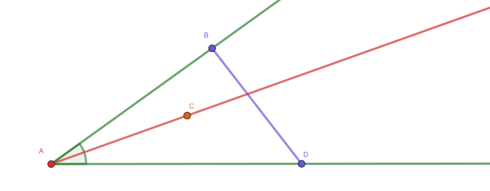

2.1 Congruence, Lines and Angles¶
Warning
Some of the definitions below are not the standard ones you’re used to.
Definitions depend heavily upon the set of axioms and undefined terms. Read each definition below and make note of the ones that feel awkward. All definitions have to work within the set of axioms, so be sure to check out the SMSG Axioms page.
- Segment and Angle Congruence
Two segments (or angles) are congruent if and only if their measures are equal.
- Polygon Congruence
Two polygons are congruent if and only if there exists a one-to-one correspondence between their vertices such that all their corresponding sides (line sgements) and all their corresponding angles are congruent.
Note
Congruence relations are equivalance relations (see Theorem 1). Specifically, congruence relations are symmetric, reflexive and transitive.
- Collinear
Two points lying on the same line.
- Intersecting Lines
Two lines intersect if there exists a point that is on both lines.
- Parallel Lines
Two lines in the same plan which do not intersect.
- Concurrent Lines
Three or more coplanar lines that have a point in common.
- Segment
A segment \(\overline{AB}\) is the set of points \(A\), \(B\) and all points \(P\) such that \(P\in\overleftrightarrow{AB}\) and \(AP+PB=AB\).
Warning
Segments are often defined as “all points on a line between \(A\) and \(B\)” (plus endpoints). But we haven’t defined between yet. That requires knowing what a segment is.
- Between
A point \(B\) is between \(A\) and \(C\) if \(B\in \overline{AC}\) but \(B\neq A,C\).
Note
Defining a ray can be tricky. The one below was inspired by Hilbert and his use of “betweeness” axioms.
- Ray
A ray \(\overrightarrow{AB}\) (also called a half-line) is a subset of the line \(\overleftrightarrow{AB}\) that contains a given point \(A\) and all the points \(C\in\overleftrightarrow{AB}\) such that \(A\) is not between \(C\) and \(B\). The point \(A\) is called the endpoint of the ray.
- Angle
The union of two rays which have the same endpoint.
- Straight Angle
An angle whose rays are distinct but collinear.
- Angle Interior
A point \(P\) is in the interior of \(\angle{ABC}\) provided:
\(m\angle{ABC}<180^\circ\)
there exist points \(X,Y\) such that
\(X\in\overrightarrow{BA}\),
\(Y\in\overrightarrow{BC}\), and
\(P\) is between \(X\) and \(Y\)
- Convex
A polygon \(P\) is convex if \(X,Y\in P\implies \overline{XY}\in P\).
- Midpoint
The midpoint \(C\) of \(\overline{AB}\) lies on \(\overline{AB}\) such that \(AC = CB\).
- Angle Bisector
The ray \(\overrightarrow{BD}\) is the angle bisector of \(\angle{ABC}\) if \(m\angle ABD = m\angle DBC\).
- Right Angle
An angle with angle measure \(90^\circ\) (see SMSG Axiom 11).
- Acute Angle
An angle with angle measure less than \(90^\circ\).
- Perpendicular Bisector
A line which passes through the midpoint of a line segment and which forms a right angle with that segment at the point of intersection.
- Obtuse Angle
An angle with angle measure greater than \(90^\circ\).
Warning
Angles must have measure between \(0^\circ\) and \(180^\circ\) (inclusive), so we can’t yet define reflex angles, nor are we allowed to have angles with negative measure.
- Vertical Angles
The angles opposite each other when two lines cross.
- Linear Pair
Two distinct angles that share a ray whose non-shared rays are colinear.
Hint
The SMSG Supplementary Postulate (Axiom 14) uses the term linear pair which we must define, else the term supplementary will have no meaning.
- Supplementary Angle Postulate
If two angles form a linear pair, they are supplementary.
Warning
The SMSG Axioms introduce a non-standard geometry term linear pair, but let’s embrace it and define the term right angle pair, too!
- Right Angle Pair
Two distinct angles that share a ray whose non-shared rays form a right angle.
- Complementary Angle
If two angles form a right angle pair, they are complementary.
Theorems¶
Congruence relations are equivalence relations.
Every line segment has exactly one midpoint.
Every angle has exactly one bisector.
Supplements and complements of the same angles are congruent.
The intersection of two convex polygons is convex.
Vertical angles are congruent.
Tip
Pasch’s Axiom is equivalent to the SMSG Plane Seperation Postulate (Axiom 9) and thus will not need to be proven.
Pasch’s Axiom. Given a line that contains no vertex of a triangle, if that line intersects one side of the triangle, it must intersect another.
Crossbar Theorem. If at least one point of \(\overrightarrow{AC}\) is in the interior of \(\angle{BAD}\) then \(\overrightarrow{AC}\) intersects \(\overline{BD}\).

Tip
Euclid often used a version of the Crossbar theorem to prove that lines in his constructions actually intersected.
The Crossbar theorem is a direct result of Pasch’s Axiom. We don’t need to prove this theorem when using the SMSG Axioms because the Ruler Postulate and Distance Postulates guarantee that all lines in our geometry have the same properties as the real number line, and the Plane Separation Postulate (or Pasch’s Axiom) guarantees the intersections that Euclid was justifying.